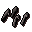
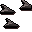

Barbed bolt

| Config name | barbed_bolt |
| Item id | 881 |
| Value | 200 gp |
| Weight | 18g |
| Members | Yes |
| Tradeable | Yes |
| Stackable | Yes |
| Equip slot | quiver |
| Options | Wield |
| Category | bolts |
| Level required | 1 |
| Defined in | scripts/skill_combat/configs/ranged/bolts.obj |
| Equipment stats | Ranged str 46 |
Barbed bolt
Great if you have a crossbow!
How to make
| Skill | Level | XP | Ingredients | Tool | How | Where | Makes |
|---|---|---|---|---|---|---|---|
| Fletching | 51 | 9.5 |  Barb bolttips ×10, | use on item | ×10 |